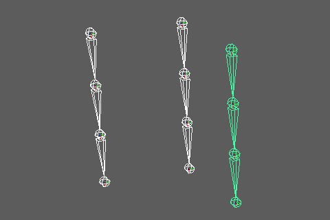

Loft Surface Creator
Overview
Creates curves from multiple joint chains and lofts them into a NURBS surface or mesh. This tool is ideal for creating weight transfer sources for parts composed of multiple joint chains, such as skirts or belts.
The created object can optionally have a skin cluster automatically applied.

How to Launch
Launch the tool from the dedicated menu or using the following command:
from faketools.tools.rig.loft_surface_creator import ui
ui.show_ui()
Usage
Surfaces are lofted in the order of the registered joint chains. There are two modes for registering joint chains. Each joint chain must have the same number of joints.
Root Joints Mode

- Select
Root JointsinInput Mode. - Select the root joint of each joint chain and add it
using the
Add Selectedbutton. - Configure the options.
- Press the
Createbutton to create the surface or mesh.
Direct Chains Mode

- Select
Direct ChainsinInput Mode. - Select the joints that compose a chain and add them
using the
Add Chainbutton. - Add subsequent chains with the same number of joints.
- Configure the options.
- Press the
Createbutton to create the surface or mesh.
Options
The main options are divided into the following categories:
- Input Mode Options
- Surface Options
- Curve Options
- Bind Options
- Skin Cage Options
Input Mode Options
- Input Mode
- Specifies the joint input method.
Root Joints: Specify root joints and automatically expand joint chains.Direct Chains: Directly specify joints for each chain.
- Specifies the joint input method.
- Joints
- Displays the list of registered joints.
Add Selected/Add Chain: Adds the selected joints.Remove: Removes selected items from the list.Clear: Clears all items.
- Skip (Root Joints mode only)
- Specifies the number of joints to skip within each joint chain.
- Example: With
Skip=1, every other joint is used.
Surface Options
- Output
- Specifies the type of object to create.
NURBS Surface: Creates a NURBS surface.Mesh: Creates a mesh.
- Specifies the type of object to create.
- Surface Div
- Specifies the number of additional divisions in the loft direction (between chains).
- If 0, minimal divisions based on the number of chains without additional divisions.
- Close
- When enabled, connects the last chain to the first chain to create a closed shape.
- Used when creating circular shapes such as skirts.
- Requires 3 or more chains.
Curve Options
Options for creating curves from each joint chain.
- Curve Div
- Specifies the number of additional CVs to insert between joints.
- Used to make curves smoother.
- Center
- When enabled, creates the curve so its center passes through the center of the joints.
Bind Options
Options for setting up a skin cluster on the created object.
- Is Bind
- When enabled, applies a skin cluster to the created object.
- Weight Method
- Specifies the weight calculation method.
Linear: Sets weights using linear interpolation.Ease: Sets weights using ease-in/out interpolation.Step: Sets 100% weight to the nearest joint.
- Specifies the weight calculation method.
- Loft Weight
- Specifies the weight distribution method in the loft
direction (between chains).
Index: Index-based linear interpolation. Suitable for evenly distributed CVs.Distance: Interpolation based on cumulative distance along U=0 CV row. Effective when CV spacing is uneven.Projection: Calculates interpolation factor by projecting points onto AB line segment. Enables natural interpolation based on geometry shape.
- Specifies the weight distribution method in the loft
direction (between chains).
- Smooth Levels
- Specifies the number of weight smoothing iterations.
- Applied only in the curve direction (between joints).
- Parent Influence
- Specifies the influence ratio to parent joints (0.0-1.0).
- Higher values increase the parent joint’s influence.
- Remove End
- When enabled, merges end joint weights to the parent joint.
- Only effective when
Closeis disabled.
Skin Cage Options
Options for converting NURBS surfaces to skin cage
meshes. Only available when Output is
NURBS Surface and Is Bind is
enabled.
- To Skin Cage
- When enabled, converts the created NURBS surface to a skin cage mesh.
- The original NURBS surface is deleted.
- Division Levels
- Specifies the skin cage subdivision level.
- Higher values result in finer meshes.